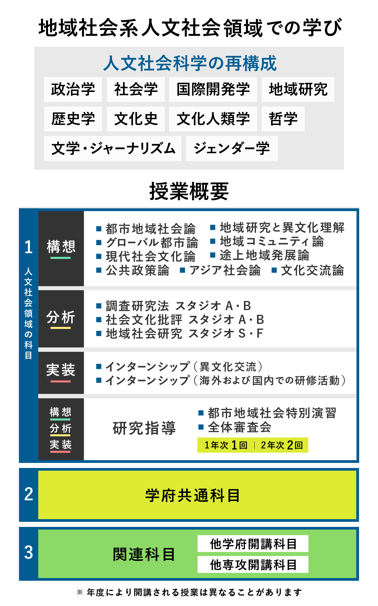

カリキュラム

概略図
在学生が伝えたい特色
①教員と学生の距離が近く、人文社会科学をベースとした様々な分野の教員の視点から、意見交換ができる環境。
②幅広い研究が受け入れられるので、学生たちの研究内容も多岐にわたっており、関わるなかで、様々な視点を得られること。
1年次
1年次には「学府共通科目」の分野横断的な科目により基礎知識を得るとともに、各種スタジオにおいて、調査研究および論文作成に不可欠な「分析」に関わるスキルを身につけます。
また、それぞれの研究分野の「構想」に関わる授業を選択して学習し、専門知識を身につけます。それを統合する形で「研究指導」が行われます。
2年次
2年次には、１年次に身につけた知識を社会に還元する「実装」に関わる科目を学ぶとともに、研究テーマに関わる「関連科目群」の授業により、更に専門知識を深めます。それを統合する形で、修論執筆に関わる「研究指導」が行われます。
構想
分析
質的・量的調査や学術論文の書き方など、人文社会科学に関わる調査研究および論文作成に不可欠なスキルを身につけることを目的とした、双方向型のスタジオ教育を行います。
実装
研究指導
各授業で学んだ「構想」、「分析」、「実装」の力を、担当教師の下、各自の研究テーマに沿って統合していきます。
また、担当教員のみならず、1年次に1度、2年次に2度、全体審査会が開かれ、複数の教員や学生から、修論について、コメントをもらいます。
論文が、専門領域に閉じたものにならず、開かれた研究となるこのような環境は、本コースの強みの一つです。
学府共通科目
国内外のまちづくりに関する分野横断的な科目により基礎知識を得ることを目的とした共通授業です。
関連科目
芸術系、都市基盤系などの他の専攻あるいは、他学府からの授業も、研究テーマに合わせて履修することができます。